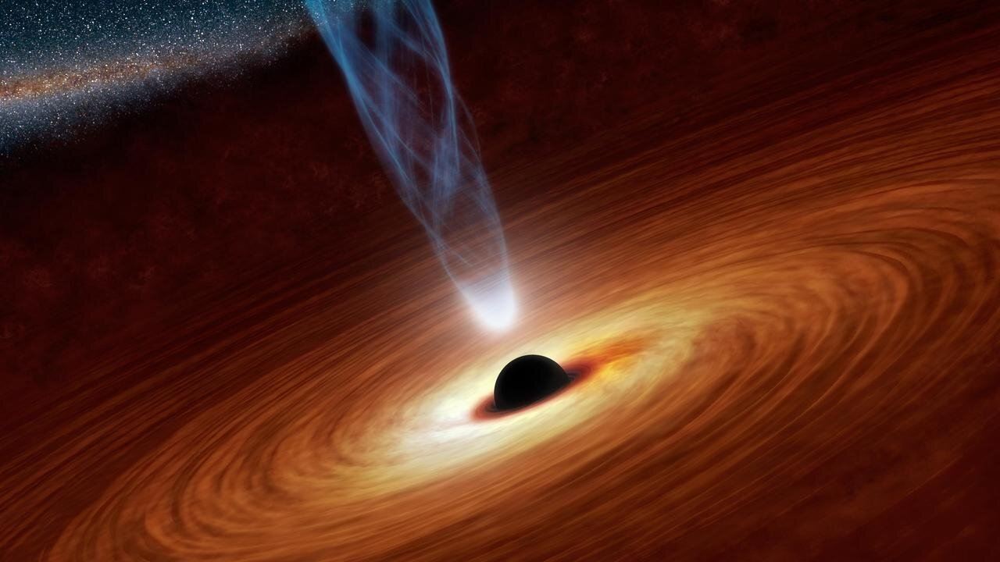

WHAT IS BLACK HOLE
Black hole, cosmic body of extremely intense gravity from which nothing, not even light, can escape. A black hole can be formed by the death of a massive star. When such a star has exhausted the internal thermonuclear fuels in its core at the end of its life, the core becomes unstable and gravitationally collapses inward upon itself, and the star’s outer layers are blown away. The crushing weight of constituent matter falling in from all sides compresses the dying star to a point of zero volume and infinite density called the singularity.
FORMATION OF BLACK HOLES
Black holes usually cannot be observed directly on account of both their small size and the fact that they emit no light. They can be “observed,” however, by the effects of their enormous gravitational fields on nearby matter. For example, if a black hole is a member of a binary star system, matter flowing into it from its companion becomes intensely heated and then radiates X-rays copiously before entering the event horizon of the black hole and disappearing forever. One of the component stars of the binary X-ray system Cygnus X-1 is a black hole. Discovered in 1971 in the constellation Cygnus, this binary consists of a blue supergiant and an invisible companion 14.8 times the mass of the Sun that revolve about one another in a period of 5.6 days.
Some black holes apparently have nonstellar origins. Various astronomers have speculated that large volumes of interstellar gas collect and collapse into supermassive black holes at the centres of quasars and galaxies. A mass of gas falling rapidly into a black hole is estimated to give off more than 100 times as much energy as is released by the identical amount of mass through nuclear fusion. Accordingly, the collapse of millions or billions of solar masses of interstellar gas under gravitational force into a large black hole would account for the enormous energy output of quasars and certain galactic systems
OUR RELATIONAL WITH BLACK HOLES
One such supermassive black hole, Sagittarius A*, exists at the centre of the Milky Way Galaxy. Observations of stars orbiting the position of Sagittarius A* demonstrate the presence of a black hole with a mass equivalent to 4,154,000 Suns. Supermassive black holes have been detected in other galaxies as well. In 2017 the Event Horizon Telescope obtained an image of the supermassive black hole at the centre of the M87 galaxy. That black hole has a mass equal to six and a half billion Suns but is only 38 billion km (24 billion miles) across. It was the first black hole to be imaged directly. The existence of even larger black holes, each with a mass equal to 10 billion Suns, can be inferred from the energetic effects on gas swirling at extremely high velocities around the centre of NGC 3842 and NGC 4889, galaxies near the Milky Way.
HAWKING RADIATION
Hawking radiation is black-body radiation that is predicted to be released by black holes, due to quantum effects near the black hole event horizon. It is named after the physicist Stephen Hawking, who provided a theoretical argument for its existence in 1974.[1]
Hawking radiation reduces the mass and rotational energy of black holes and is therefore also known as black hole evaporation. Because of this, black holes that do not gain mass through other means are expected to shrink and ultimately vanish. As the radiation temperature is inversely proportional to the black hole's mass, micro black holes are predicted to be larger emitters of radiation than more massive black holes and should thus shrink and dissipate faster.[2]. However, this entire premise appear as a black hole information paradox and lead to discovery of holographic principle as a resolution that it is against the basic thermodynamics for a any matter to evoporate or disappear, a criticism lead by Leonard Susskind and Gerard 't Hooft [3].
In June 2008, NASA launched the Fermi space telescope, which is searching for the terminal gamma-ray flashes expected from evaporating primordial black holes. In the event that speculative large extra dimension theories are correct, CERN's Large Hadron Collider may be able to create micro black holes and observe their evaporation. No such micro black hole has been observed at CERN.[4][5][6][7]
In September 2010, a signal that is closely related to black hole Hawking radiation (see Analog models of gravity) was claimed to have been observed in a laboratory experiment involving optical light pulses. However, the results remain unverified and debatable.[8][9] Other projects have been launched to look for this radiation within the framework of analog models of gravity.